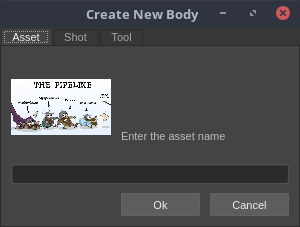
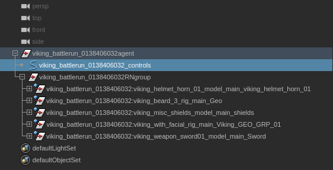

How to Make a Crowd
How to Setup Crowds Cycle Assets in Maya
Making a crowd cycle asset is pretty much the same as making a model, rig, or animation. There are a couple of important differences for crowds so please take a look all the way through it please.
Create Body
First you need to create the crowd cycle asset in the pipeline.
- Click the plus sign to bring up the asset create window.
- Make sure you click on the "Crowd Cycle" tab.
- Name your cycle. Keep in mind that your cycle may be used in more than one shot, so you may want to avoid using the shot name as a prefix unless that cycle is only ever going to be in that shot. Be descriptive but concise.
Checkout
Click the checkout button and then in the checkout window select your newly created cycle. Click checkout.
Reference a Model or Rig
Bring in assets like the viking facial rig, helmet, sword, etc. just like you would do for any scene.
For the crowds we need to be able to easily switch out weaons, helmets, sheilds, etc. so that we can add varition. This will be done automatically in Houdini.
There are certain accessories that will help with the randomization:
- Helmet: use whatever helmet you want.
- Weapon:
- For one handed weapons you should be able to use whatever you want as well. However, it might be easier to use the viking_weapon_sword01 because it doesn't have several versions inside of it like the viking_misc_swords.
- For two handed weapons you should problaby use the viking_misc_spears because I think its the only two handed weapon we have.
- Shield: use viking_misc_shields please please please it has to be that one.
- Beard: Don't add a beard; we'll take care of that in Houdini. Also keep in mind that for animation the beard will only follow the mouth movement. There will not be any additional animation for it.
Tag Selected Objects for Export
Please make sure that all of the geo that you want to be exported is tagged. To see if it is tagged select the group/geo in the outliner and look in the channels for the selected item. It should have a channel called "BYU Alembic Export Flag." It it doesn't have the tag go ahead and added.
Note: The tag is based on if the channel is there or not and not if the tag is set to on or off.
Note: Please don't tag rigs or controls it should just be the geometry.
Note: If a group is tagged then everything in the group will be exported.
Animation
The animation should be able to be played in a loop, but remember that you need to make sure that the last frame isn't the same as the first frame or else that pose will get two frames worth of time. The last frame needs to lead into the first frame.
Publish
After you have everything in place you are ready to publish. Publishing will also take care of exporting the cycle to an alembic which you will reference into you scene during the next phase.
The New Stuff
Now that your cycle is created you can bring it into your shot. You will open your shot reference in how ever many copies of your cycle you need, draw out the same number of paths, make the vikings follow that path, and publish your shot.
Reference the Cycle
You can find your cycle by selecting the cycle option from the menu in the reference window.

Animating with the Cycle
Now that the reference is in you can start animating with it. When it references in the cycle alembic it will parent it to the controls that are highlighted in the image bellow.
For the animation you will make a path and then just have the viking follow that path. Thats it! They need to be moving a long a path inorder for it to go into our crowd tool in Houdini.
Publishing
When you publish your shot you will be prompted to export the crowd animation. Every time that you make changes to how the crowd cycle references are animated you will need to export the crowd animation. Otherwise you can dismiss that window.